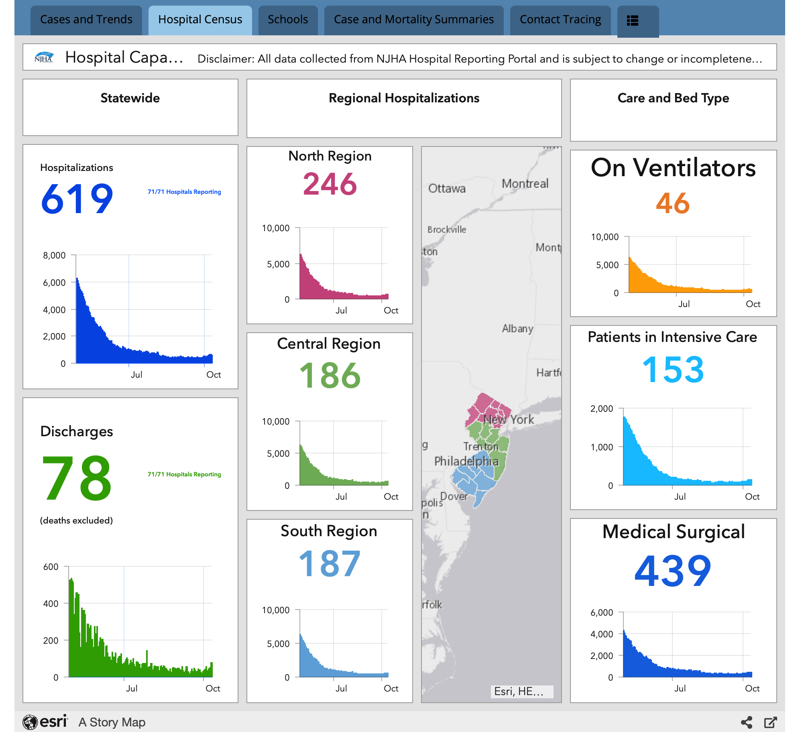
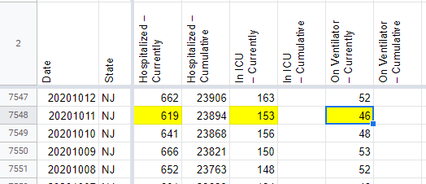
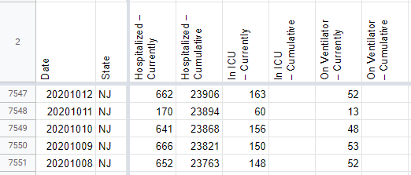

[NJ] Patching anomalous hospitalization values from 10/11
Issue number 895
the-daniel-lin opened this issue on October 13, 2020 at 9:02 am
Labels Data quality Backfill
State or US: New Jersey
Describe the problem On 10/11, during the publication shift, NJ reported extremely low current hospitalization numbers. The values we recorded are as follows:
Currently Hospitalized - 170 (dropped from 641) Currently in ICU - 60 (dropped from 156) Currently on Ventilator - 13 (dropped from 48)
That night, NJ updated their dashboard to reflect much higher values that were more in line with their trend lines. We’re backfilling these anomalously low values with the numbers sourced from their dashboard as of 9:48PM EST.
Link to data source Values as of 9:48PM EST 
AFTER: 
BEFORE: 